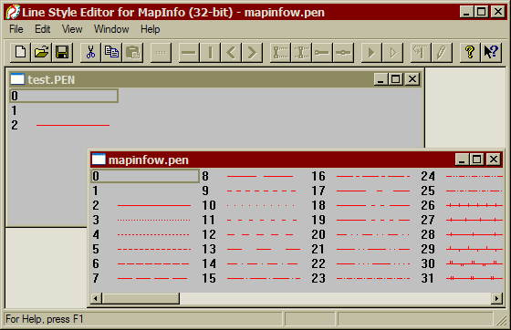

Редактирование стилей линий MapInfo. Программа Line Style Editor (MILISTED)
- Введение
- Стили линий MapInfo
- Программа MILISTED
- Меры предосторожности
- Начало работы
- Обзор инструментов
- Основные операции
- Работа со слоями
- Работа с объектами
- Инвариантность результатов
- Соблюдение размеров
- Практические примеры
- Список использованной литературы
Введение
Каждый из нас, наверное, хоть раз в жизни сталкивался с такой неприятной ситуацией, как попавший в обувь камешек. И, вроде бы, ничего серьезного нет, ходить, в принципе, можно. Но попадает под ногу в самый неподходящий момент и, в целом, жизнь отравляет.
Судя по многочисленным жалобам, для пользователей MapInfo таким «камешком» уже много лет являются крайне скудные, если не сказать убогие, средства оформления графических материалов. Да, конечно, это не программа для подготовки карт к печати, это ГИС для бизнеса (а изначально вообще – программа навигации для школьных автобусов). Её чуть ли не основная задача – продемонстрировать совету директоров, как выросли продажи по округам. Но реальность отечественного рынка такова, что на сегодня MapInfo Professional – одна из ведущих ГИС, задействованная в любой сфере, где применяются карты. А, стало быть, и требования к ней предъявляются сообразные решаемым задачам.
Безусловно, необходимо оценить усилия компании ESTI Map, официального представителя владельца программы Pitney Bowes Software Inc. Помимо продаж, как таковых, ESTI Map занимается локализацией MapInfo и её технической поддержкой. В том числе, компания разработала и бесплатно предоставляет дополнительные средства оформления картографических материалов: условные знаки различных масштабов и стили линий для различных задач. Скачать эти и другие разработки можно как на старом сайте компании www.esti-map.ru, так и на новом www.mapinfo.ru .
Однако, далеко не всегда предложенных вариантов достаточно. Так, к примеру, довольно часто необходимо показать границу двухцветной линией. Или же – в моей практике был случай, когда для оформления требовалась линии с нанесёнными на них геометрическими фигурами: квадратами, треугольниками и кругами. Понятно, что никакой готовый набор не сможет удовлетворить все возможные запросы. Понятно, что необходимо иметь возможность оперативно изменять набор стилей линий в угоду конкретному случаю.
Подобным же образом обстоят дела и с условными знаками, и с заливками. Но в данной статье разговор пойдет именно о редактировании стилей линий MapInfo.
Стили линий MapInfo
Стиль линии, в терминологии MapInfo – это отображаемый на экране и на выводимый на печать вид линейных объектов и границ регионов. Задание пользователем стиля линии происходит выбором соответствующей иконки в списке стилей:
Определения стилей линий описаны в файле mapinfow.pen. Файл может располагаться как в каталоге программы, так и в пользовательском каталоге. Уточнить месторасположение файла можно, выполнив в окне MapBasic (меню Настройка → Показать окно MapBasic) следующую конструкцию:
Note LocateFile$( 3 )
Программа MILISTED
Для редактирования файла определений стилей линий MapInfo используется программа MILISTED (она же Line Style Editor). Программа обычно поставляется вместе с установочным диском. Отдельно её можно скачать на сайте компании Pitney Bowes.
Однако на сайте программа выложена в «урезанном» виде, без справки и файлов поддержки. Ниже предложены полные версии программы:
Также дополнительно можно скачать Руководство Пользователя программы Line Style Editor (200 KB).
Программа разработана ещё в 1996-1998 гг и с тех пор не модернизировалась. Несмотря на то, что разработчики (Independent Programmers Group) вполне себе из Украины, программа полностью англоязычна. Русскоязычной версии программы, похоже, не существует. Однако, программа довольно проста и разобраться с ней не составит особого труда.
Меры предосторожности
Прежде чем начинать работу, необходимо учесть следующие моменты:
- Редактировать файл mapinfow.pen (да и, в целом, любой файл) «на живую» крайне неосмотрительно. Изменения, внесённые в файл, отменить невозможно. Поэтому настоятельно рекомендуется перед внесением изменений сделать резервную копию исходного файла.
- MapInfo не поддерживает редактирование файлов ресурсов (включая файл определений стилей линий) «на горячую». Все параметры считываются исключительно при запуске программы. Таким образом, изменения, внесенные в файл mapinfow.pen применятся только после перезапуска ГИС.
- Файл определений стилей линий, формат которого не менялся со времен MapInfo версии 4.0, может содержать до 256 записей включительно. Однако, современные версии ГИС поддерживают только 128 записей (причём доступны пользователю будут только 127 первых записей). Превышение количества записей (стилей линий) в файле mapinfow.pen приведет к ошибке при запуске MapInfo.
Начало работы
Главное окно программы MILISTED оформлено в духе лучших традиций прикладного программирования 90-х. Аскетичный, даже минималистичный интерфейс: строка меню, короткая панель инструментов и строка статуса.
На момент загрузки и открытия файла определений большая часть кнопок панели инструментов неактивна. Для того, чтобы начать работу по изменению стиля, необходимо выбрать требуемую позицию в рабочем окне и выполнить команду меню Edit → Modify (Enter). Откроется новое окно редактирования выбранного стиля, инструменты на панели активизируются.
Обзор инструментов
Ниже представлен обзор Панели Инструментов программы MILISTED.
| New | Новый файл | CTRL+N | Создаёт новый файл определений .PEN | |
| Open | Открыть файл | CTRL+O | Открывает существующий файл определений *.PEN в новом окне. Можно открывать несколько файлов *.PEN одновременно. Переключение между окнами осуществляется опциями меню Window. | |
| Save | Сохранить файл | CTRL+S | Сохраняет активный файл определений под текущим именем. Если файл только что создан и ещё не имеет имени, будет выведен диалог «Сохранить как…» | |
| Cut | Вырезать | CTRL+X | Вырезает выделенный элемент в буфер обмена программы. Эта команда работает на уровне стилей линий и слоёв, но не применима к элементарным объектам, таким как Линия, Штрих и т.д. | |
| Copy | Копировать | CTRL+C | Копирует выделенный элемент в буфер обмена программы. Эта команда работает на уровне стилей линий и слоёв, но не применима к элементарным объектам, таким как Линия, Штрих и т.д. | |
| Paste | Вставить | CTRL+V | Вставляет элемент из буфера обмена программы. Эта команда работает на уровне стилей линий и слоёв, помещая вставленное в конец списка. | |
| Layer | Новый слой | Создаёт новый слой в поле редактируемого стиля. Слой помещается после существующих. | ||
| Draw | Отрезок | - | Создаёт новый горизонтальный отрезок в существующем слое. Длина отрезка ограничена длиной слоя. | |
| Tick Mark | Штрих | | | Создаёт новый вертикальный отрезок в существующем слое. Длина отрезка ограничена высотой слоя. | |
| Andletrick < | Левый штрих | < | Создаёт новую ломаную линию в виде знака «<». Центральный угол ломаной совпадает с горизонтальной осью слоя. При сокращении высоты может образовать отрезок с углом наклона 45°. | |
| Andletrick > | Правый штрих | > | Создаёт новую ломаную линию в виде знака «>». Центральный угол ломаной совпадает с горизонтальной осью слоя. При сокращении высоты может образовать отрезок с углом наклона 45°. | |
| Polygon begin | Полигон | ; | Создаёт полигон в текущем слое. Полигон имеет 4 грани, вертикальные грани могут менять положение и размер. | |
| Polygon tick | Узлы полигона | : | Добавляет пару узлов на горизонтальные грани активного полигона. Вертикальная грань может менять положение и размер. | |

|
Polyline begin | Полилиния | , | Создаёт полилинию в текущем слое. Полилиния имеет 2 узла, каждый из которых может изменять своё положение. |
| Polyline tick | Узлы полилинии | . | Добавляет узел на активную полилинию. Узел может менять своё положение. | |
| Draw to End | Рисовать-До-Конца | Создаёт видимую прямую в текущем слое, смещая все объекты, расположенные после, в конец линии. Положение прямой совпадает с горизонтальной осью слоя. | ||
| Skip to End | Пропустить-До-Конца | Создаёт НЕвидимую прямую в текущем слое, смещая все объекты, расположенные после, в конец линии. Положение прямой совпадает с горизонтальной осью слоя. | ||
| Loop | Разрыв | Запрещает повторение объектов текущего слоя, расположенных до элемента Стоп. | ||
| Draw Tool | Свойства оформления | Добавляет на текущий слой невидимый объект, позволяющий задать расширенные свойства оформления элементов слоя. | ||
| About | О программе | Показывает окно с информацией о программе. | ||
| Help | Справка | F1 | Вызывает справку программы в формате Windows Help (*.HPL) |
Все инструменты Панели дублирует опции и команды меню программы. Дальнейшие пояснения будут приводиться с командами меню.
Основные операции
Иерархия элементов
Для успешной работы с программой MILISTED требуется чётко представлять себе иерархию элементов определений стилей линий.
Самым верхним уровнем является сам файл определений *.PEN. С ним производятся все доступные файловые операции: копирование, удаление, открытие/закрытие файла.
Ниже по уровню расположен список стилей линий. Именно окно списка стилей в программе MILISTED служит представлением файла *.PEN. Никаких манипуляций со списком в пределах программы производить нельзя, можно только получить его свойства – количество записей и их порядковые номера.
Следующим уровнем, подлежащим списку, является сам стиль линии. На этом уровне возможно создание/удаление стилей, а также их копирование/вставка. Созданные/скопированные элементы списка стилей (стили) помещаются в конец списка.
Каждый стиль, в свою очередь, раскладывается на слои. Со слоями стиля производятся стандартные манипуляции создания и удаления, копирования и вставки. Также возможно редактирование свойств слоя: размер, положение и порядок отображения.
Слой содержит дочерние элементы стиля – объекты. Объекты бывают сложные (полигон, полилиния) и элементарные (прямая, отрезок).
Таким образом, общая схема создания стиля линии выглядит так:
- Открыть файл *.PEN для редактирования.
- Добавить в списке стилей новый стиль.
- Открыть созданный стиль для редактирования.
- Добавить новый слой в стиль.
- Добавить на слой новые объекты.
- Сохранить файл *.PEN.
Создание нового файла определений стилей
Для создания нового файла определений стилей линий MapInfo необходимо выполнить команду «Новый файл» (меню File → New). В результате будет создан новый файл определений, содержащий 3 стиля по умолчанию. Из этих трех стилей первый является служебным и не подлежит редактированию, второй – соответствует стилю «N – без оформления» в диалоге выбора стилей ГИС MapInfo.
Для записи файла на диск необходимо выполнить его сохранение командой «Сохранить файл» (меню File → Save). В приведённом примере файл сохранялся под именем test.PEN.
Открытие существующего файла определения стилей
Программа MILISTED мультиоконна, т. е. поддерживает одновременную работу с несколькими файлами определений.
Для открытия существующего файла определений стилей необходимо выполнить команду «Открыть файл» (меню File → Open) и в стандартном диалоге указать путь к редактируемому файлу.
Создание и удаление стиля
Для создания нового стиля необходимо выполнить команду меню Edit → New Line Style. Эта команда будет доступна только при активном окне списка стилей. При активном окне, к примеру, слоя стиля, состав меню «Правка» будет иным.
В результате выполнения команды будет создан новый стиль, содержащий один пустой слой. Стиль будет помещен в конец списка стилей редактируемого файла определений.
Для удаления стиля необходимо выбрать его в списке стилей окна определений и выполнить команду меню Edit → Delete. Команда Delete универсальна и, не меняясь в зависимости от активного окна, удаляет выделенный объект.
Копирование стиля
Стили можно копировать как в пределах одного файла определений, так и между файлами. Для того, чтобы скопировать (переместить) стиль необходимо выбрать стиль в списке стилей и выполнить команду «Копировать» или «Вырезать» (меню Edit → Copy/Cut). После помещения стиля в буфер обмена нужно активировать окно редактируемого файла определений и выполнить команду «Вставить». Вставленный стиль будет помещен в конец списка стилей. В случае, если активное окно отличается от окна списка стилей, команда «Вставить» будет недоступна.
Работа со слоями
Основным элементом стиля линии является слой. По сути, стилей без слоёв не существует, даже неотображаемые стили (позиции списка 0 и 1) всё равно содержат один слой. И, если стиль – это контейнер, который содержит слои, то сам слой – это контейнер для объектов (линии, штрихи, полигоны etc).
Кроме того, слой отвечает за размер элементов и их воспроизводимость. На этих двух моментах следует остановиться подробнее.
Рабочее поле слоя линии в окне редактирования расчерчено на клетки. По умолчанию слой создаётся с размером 1×9 клеток. Впоследствии этот размер можно изменить при помощи указателя мыши или в окне свойств слоя (меню Edit → Property):
Как известно из Руководства Пользователя (Line Style Editor 2.0 User Guide), толщина простой линии равна 1 пикселю (px). Так как линия занимает 1 клетку, можно сделать вывод, что размер клетки рабочего поля слоя – 1 px. Таким образом, минимальный размер рабочего поля составляет 1×9 px, максимальный – 31×128 px. Необходимо учитывать, что в поля длины и отступов от центра можно ввести значения 0-127 (для длины) и 4-15 (для отступов).
Очевидно, что эти же значения являются максимальными и для объектов слоя.
С длиной слоя напрямую связано понятие воспроизводимости объектов. Комплекс объектов, расположенных на слое, повторяется по всей линии, формируя её оформление. Пример конечного оформления линии можно увидеть в процессе редактирования в верхнем поле.
Слоёв в стиле может быть больше одного, при этом самый нижний слой в окне редактирования стиля будет отображаться самым верхним в конечном оформлении линии. Воспроизводимость слоёв в стиле регулируется исключительно их собственным размером, т. е. слои воспроизводятся независимо.
Со слоями стиля возможно выполнять все стандартные операции редактирования: создание (меню Edit → New Layer), удаление (меню Edit → Delete), копирование/вставка, а также изменение размеров (меню Edit → Property).
Работа с объектами
Как уже упоминалось, объекты стиля линии подразделяются на элементарные и сложные. Элементарные объекты могут изменять свое расположение на слое, свой размер, но не могут изменять форму. Сложные же обладают дополнительными свойствами и разделяются на объекты формы и объекты смещения. К элементарным объектам относятся: Draw (Отрезок), Tick Mark (Штрих), Andletrick (Левый и Правый штрих). К сложным объектам формы относятся: Polygon (Полигон) и Polyline (Полилиния). Эти объекты могут менять не только размер и положение в целом, но и местоположение отдельных узлов (форму объекта). К объектам смещения относятся: Draw (Рисовать-До-Конца) и Skip (Пропустить-До-Конца). Объекты смещения регулируют местоположение других объектов слоя, расположенных после (правее) них. Кроме перечисленных, существуют, условно говоря, «служебные» элементы: , Loop (Разрыв) и Draw Tool (Свойства оформления). Последние не формируют каких-либо видимых на конечной линии элементов, но задают параметры оформления объектов в целом.
Основные операции редактирования
Для размещения элементов на слое необходимо выполнить команду меню Edit → New Object → … , либо выбрать требуемый элемент на Панели Инструментов. Элемент будет добавлен в активный слой стиля, непосредственно на или правее последнего активного объекта. В случае, когда объекты на слое отсутствуют, новый объект будет добавлен на первый пиксель горизонтальной оси слоя.
Для удаления объекта необходимо активировать его указателем мыши или командой меню Objects → Next/Previous, а затем удалить командой меню Edit → Delete.
Копирование объектов, к сожалению, в программе MILISTED запрещено.
Изменение размеров объектов осуществляется аналогично со слоями: указателем мыши или командой меню Edit → Property для активного объекта:
Редактирование объектов формы
Сложный объект создаётся так же, как и прочие: командой меню или кнопкой на Панели Инструментов. После добавления сложного объекта на слой активизируются команды «Узлы полигона» или «Узлы полилинии» для полигона и полилинии соответственно.
Последующее редактирование требует активации не самих объектов, а их узлов. Так, для изменения положения и размеров полигона необходимо последовательно изменить местоположение всех его узлов.
Добавление узлов на активный сложный объект выполняется командой меню Edit → New Object → Polygon/Polyline Tick. При добавлении новых узлов длина объекта автоматически увеличивается на 1 пиксель вправо от добавления.
Использование объектов смещения
Объект Draw to End (Рисовать-До-Конца), создаёт прямую линию в активном слое. Но, в отличие от схожего с ним объекта Draw (Отрезок), не может менять свою длину. Являясь в геометрическом смысле лучом, Draw to End продолжается по всей длине линии. Особенность этого объекта заключается в том, что остальные объекты слоя, расположенные после него, сдвигаются в конец результирующей линии.
Следующий объект этой группы, Skip to End (Пропустить-До-Конца), так же, как и предыдущий, создаёт в слое прямую линию, но на этот раз – невидимую. По сути, объект сдвигает все элементы слоя, расположенные правее него, в конец линии.
Использование служебных объектов
Первый из «служебных» объектов – Loop (Разрыв) – прекращает воспроизведение объектов, расположенных на слое слева от него. С известным допущением можно сказать, что Loop делит слой на два независимых по признаку воспроизведения слоя.
Второй же объект, Draw Tool (Свойства оформления) является, пожалуй, самым интересным. При добавлении этого объекта на слой ничего не происходит. Но если его активировать и открыть свойства, то появится окно, позволяющее менять свойства оформления всех объектов, добавленных после.
В окне выделяются 4 блока опций:
- Pen Width (Толщина линии)
- Pen Color (Цвет линии)
- Pen Width Limits (Предел толщины линии)
- Brush Color (Цвет заливки)
Pen Width отвечает за толщину линий создаваемых в слое объектов. По умолчанию выставлена опция «User» (Пользовательская). Это наиболее распространённая ситуация, при которой толщина объектов при создании будет равной 1 px, а в дальнейшем, при использовании стиля в MapInfo, к этой толщине будут добавляться пользовательские настройки. Опция «User +» изменяет толщину линии при её создании. Таким образом, можно создать линию с толщиной до 7 px. При использовании такого стиля в MapInfo пользовательские настройки будут также добавляться к исходной толщине. Опция «Own» позволяет выставить собственные настройки толщины линии, которые будут неизменны в среде MapInfo. Т.е., если создать стиль с линий толщиной 1 px, то и в конечной карте эта линия будет однопиксельной, вне зависимости от настроек оформления. Опция же «Not used» отменяет действие предыдущих объектов Draw Tools (при условии, что их на слое несколько).
Pen Color регулирует цвет линии объектов. Так же как и в предыдущем блоке, опция «Not used» отменяет действие предыдущих объектов Draw Tools, опция «User» оставляет право выбора цвета за пользователем, а «Own» жёстко фиксирует неизменное значение цвета линии.
Pen Width Limits устанавливает пределы, в которых может изменяться толщина линии. Ввести можно значения от 0 до 7, но это – не толщина линии собственно, т. к. линия не может быть меньше 1 px. Эти значения регламентируют то, на сколько можно изменять толщину линии.
Brush Color регулирует цвет заливки для полигонов. Действие опций полностью аналогично блоку Pen Color.
Важным моментов при использовании Draw Tools является положение других объектов относительно него. Draw Tools будет влиять только на те объекты, которые расположены после (правее) него. То же касается и Skip to End, и Loop, и других. Но, если тот же Loop не получится переместить относительно предыдущих объектов, то Draw Tools не столь нативен. Чтобы избежать ошибки, требуется внимательно следить за его положением.
Инвариантность результатов
Особенностью создания стилей оформления линии MapInfo является тот занятный факт, что одинакового с виду результата можно достичь несколькими способами. Так, сплошную линию можно создать, добавив на слой объект Draw to End (Рисовать-До-Конца), а можно при помощи объекта Draw (Отрезок). При этом последний можно создать как однопиксельный, так и многопиксельный – результат конечного оформления будет визуально неотличим.
Объекты можно располагать на одном слое, а можно на разных. Наклонный отрезок можно создать при помощи объекта Angletick, а можно изобразить его полилинией.
В общем и целом, при равенстве результатов, выбор инструмента в каждом конкретном случае – дело исключительно личных предпочтений.
Соблюдение размеров
Как уже говорилось, MapInfo не является программой для предпечатной подготовки карт, это ГИС, со своими сильными и слабыми сторонами. Однако, если уж жизнь и работа заставляют соблюдать некие правила оформления линейных объектов, то следует озаботиться и их соответствиям размерам в масштабе.
Пусть не полностью, пусть не совсем удобно, но стили линий MapInfo позволяют соблюдать это требование. К сожалению, создать стиль линий, выдержанный в размерах, можно только под определённый масштаб и для комфортной работы придётся иметь набор файлов *.PEN, но это всё равно больше, чем ничего.
Итак, линии в MapInfo (и MILISTED) измеряются в пикселях. Размер пикселя, как известно, напрямую зависит от разрешения изображения. Внутреннее разрешение MapInfo равняется 96 DPI. Таким образом, размер пикселя для MapInfo составляет:
1 дюйм / 96 DPI = 25,4 мм / 96 DPI = 0,26458(3) мм ≈ 0,265 мм
Исходя из этого, можно создавать элементы слоя, которые будут более-менее соответствовать требованиям в определённом масштабе.
Практические примеры
ЛЭП в масштабе
Задача: создать стиль линии, отображающий условный знак 115(3) «ЛЭП высокого напряжения» для масштаба 1:5000.
Рассчитываем размер элементов для знака (в масштабе):
- длина стрелки 3-4 мм соответствует 11-15 px;
- высота указателя стрелки 1 мм соответствует 3-4 px;
- расстояние между указателями 0,2 мм соответствует 1 px;
- диаметр знака столба 1 мм соответствует 3-4 px.
Руководствуясь этими размерами, создаём стиль:
- Создаём новый стиль.
- Создаем слой 1 длиной 6 px. На нём размещаем Draw Tools и запрещаем изменение толщины и цвета. Добавляем Draw to End на позицию 3.
- Создаём слой 2 длиной 19 px. На нём размещаем Draw Tools и запрещаем изменение толщины и цвета. Добавляем два Angletick c отступами 3/-2 на позиции 16 и 18. Добавляем Loop на позицию 19.
- Создаём слой 3 длиной 19 px. На нём размещаем Draw Tools и запрещаем изменение толщины и цвета. Добавляем Skip to End на позицию 0. Добавляем два Angletick c отступами 3/-2 на позиции 1 и 13.
Зимник в масштабе
Задача: создать стиль линии, отображающий условный знак 194 «Зимник» для масштаба 1:5000.
Рассчитываем размер элементов для знака (в масштабе):
- длина вспомогательного штриха 3 мм соответствует 11-12 px;
- длина промежутка меду штрихами 2 мм соответствует 6-7 px;
- расстояние между осями 1,3 мм соответствует 5 px;
- длина основного штриха (3+2+3)=8 мм соответствует 30 px.
Руководствуясь этими размерами, создаём стиль:
- Создаём новый стиль.
- Создаем слой 1 длиной 36 px. На нём размещаем Draw Tools и запрещаем изменение толщины и цвета. Добавляем Polyline Begin с координатами (0, -3) – (30, -3).
- Создаём слой 2 длиной 36 px. На нём размещаем Draw Tools и запрещаем изменение толщины и цвета. Добавляем Polyline Begin с координатами (0, 3) – (12, 3). Добавляем Polyline Begin с координатами (19, 3) – (30, 3).
Двухцветная линия
Задача: создать стиль линии, сочетающий сплошные линии красного и синего цвета.
Линия должна быть масштабируемой, поэтому расчёт размеров не производим.
Создаём стиль:
- Создаём новый стиль.
- Создаем слой 1. На нём размещаем Draw Tools и выставляем Pen Color в значение белого цвета. Добавляем Draw to End.
- Создаём слой 2. На нём размещаем Draw Tools и выставляем Pen Color в значение красного цвета. Добавляем Polyline с координатами Y = 1.
- Создаём слой 3. На нём размещаем Draw Tools и выставляем Pen Color в значение синего цвета. Добавляем Polyline с координатами Y = -1.